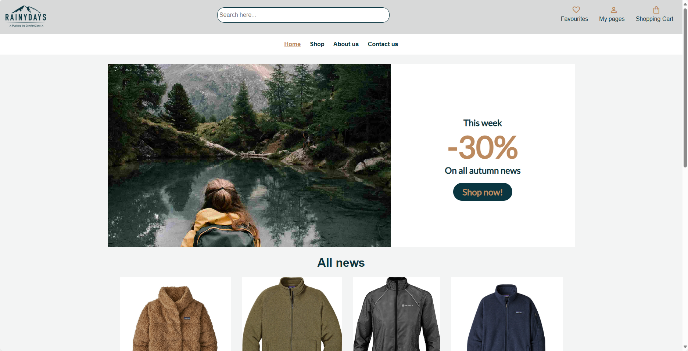
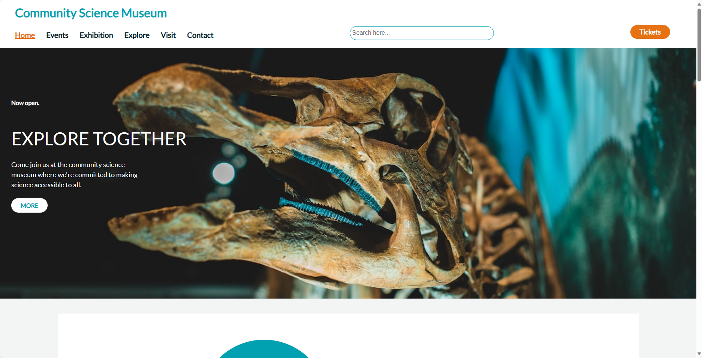
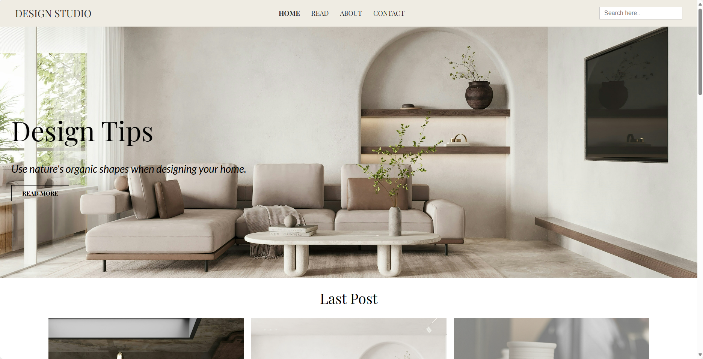

Rainydays
This is my first project at Noroff. It's an e-commerce website specializing in selling rain jackets. I've started building the website with HTML and CSS, and then expanded it further with JavaScript.
Community Science Museum
This was my semester assignment at Noroff. It was meant to be a responsive interactive science museum, targeting primary and middle school children (ages 7-15) and families with young children. This website is constructed using HTML and CSS.
Design Studio
This was my exam assignment at Noroff. The website is a responsive blog focusing on interior design, constructed using HTML, CSS, and JavaScript, with JavaScript utilized to make a call to the WordPress REST API to fetch the data.